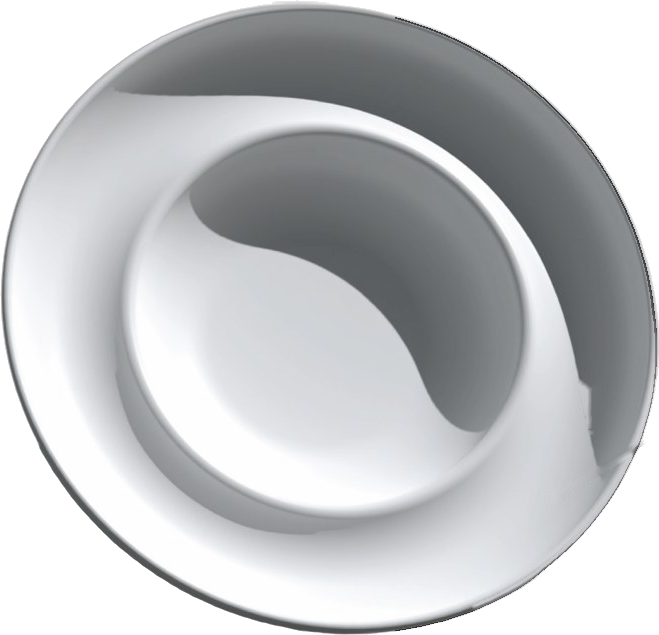
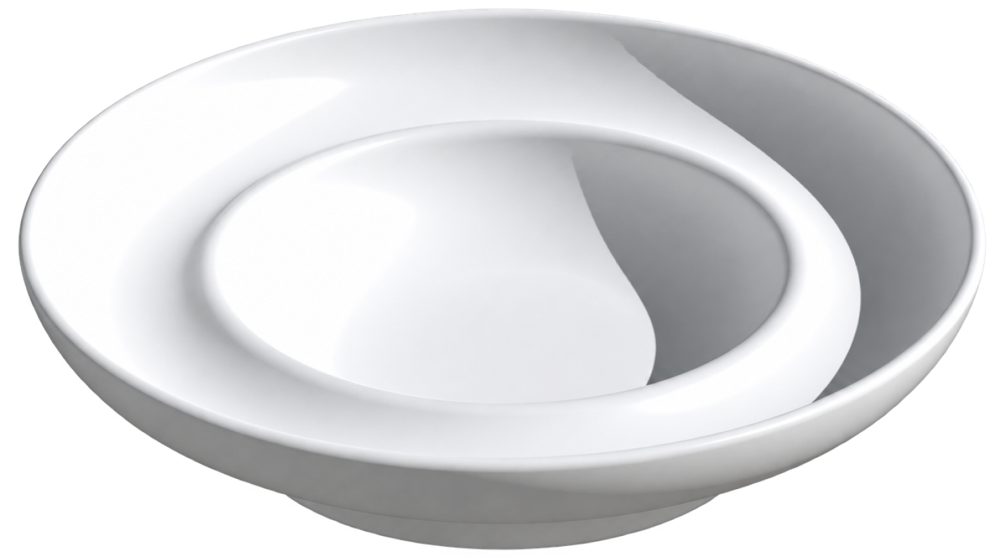
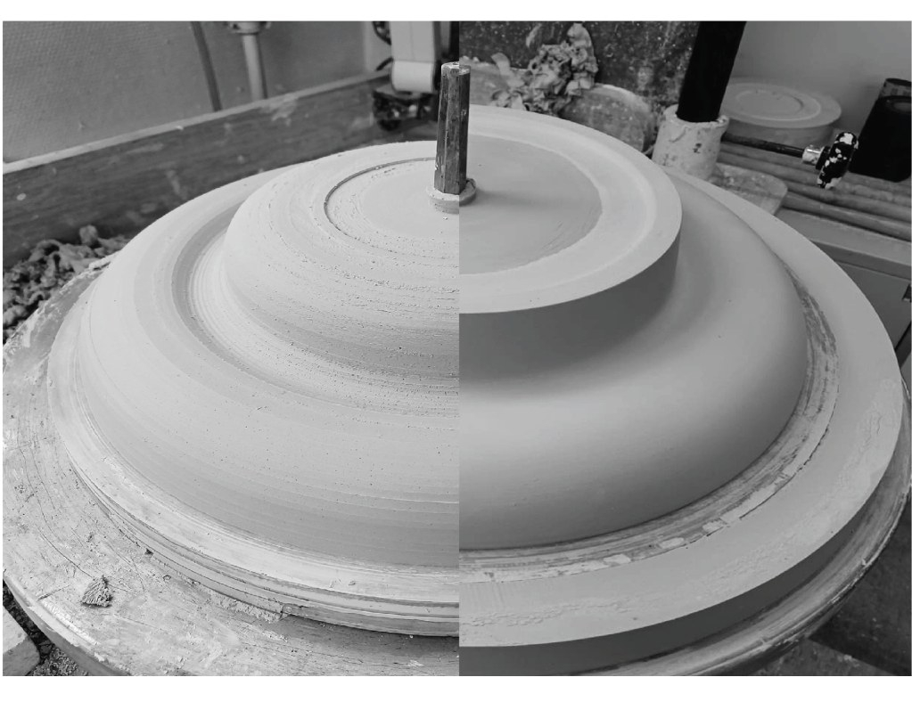
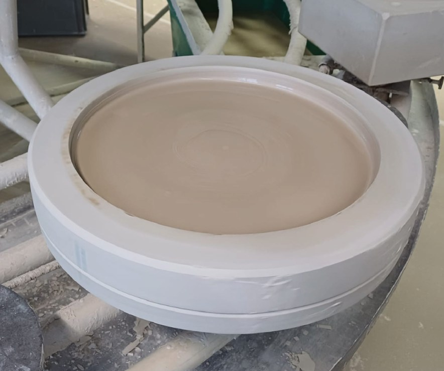
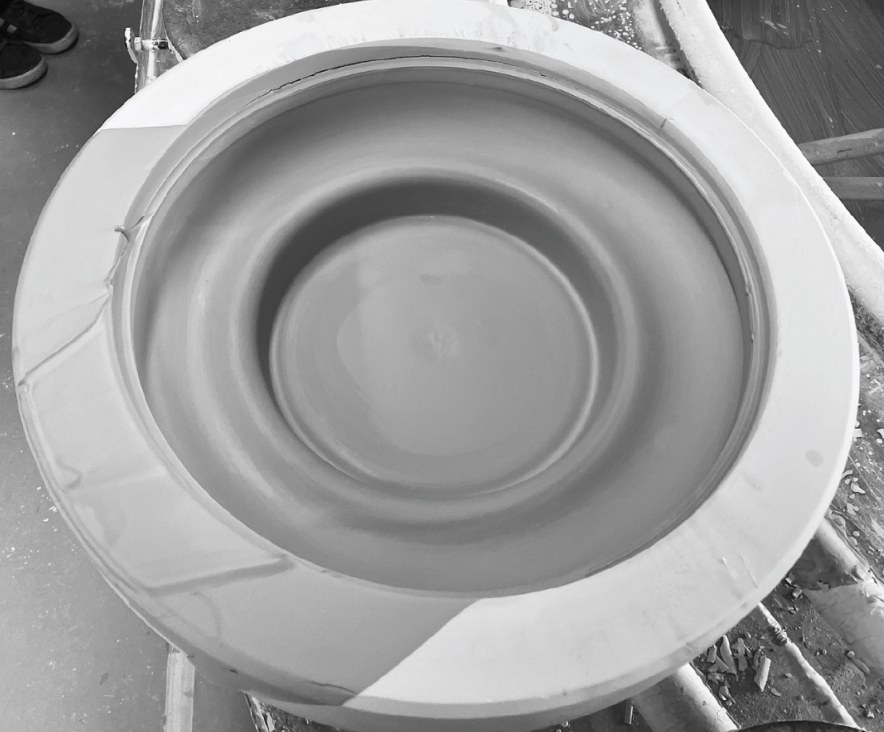
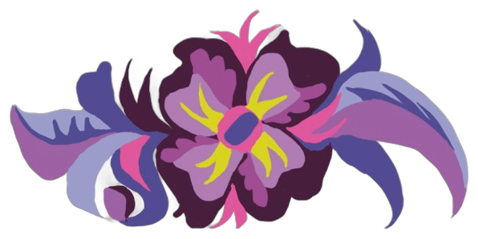
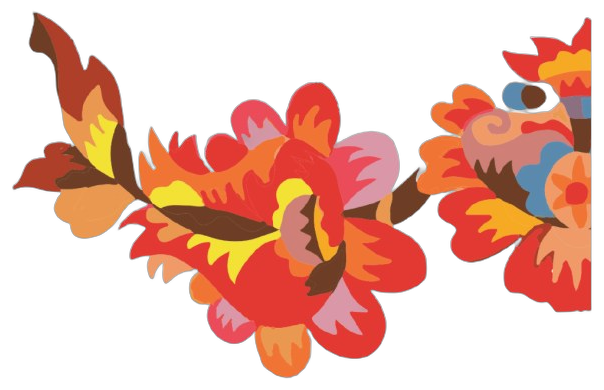
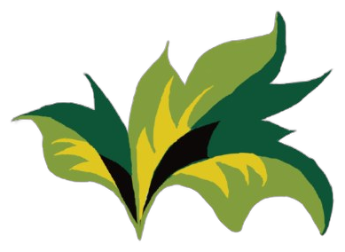
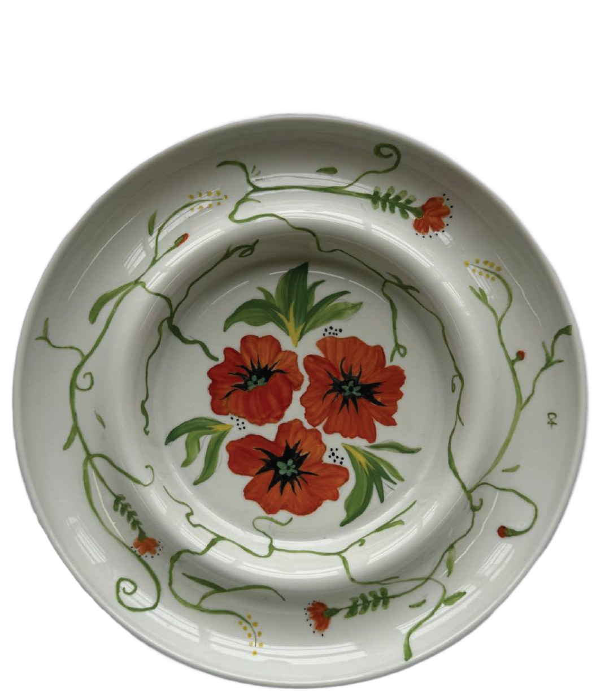

← Product design / Case 05
Porcelain tableware
Aura

Concept
Functional zoning

The starting point of the design was the idea of functional zoning. The bowl was conceived so that the side areas accommodate round fruits, while the central space allows room for other foods.
[ Process ]
From drawing to mold
Instead of relying on digital fabrication tools such as 3D printing, we developed the form physically, starting from a precise 1:1 technical drawing and translating it into a working mold.



Decoration
Tradition, reinterpreted
For the decoration, I wanted to pay tribute to tradition while reinterpreting it in a contemporary way.
Inspired by Eastern European ornamental painting styles I developed a renewed pattern.




Next project — 06 / 06Product design · Object · semester 2
Surprise soap
Two layers and a small stone hidden inside.